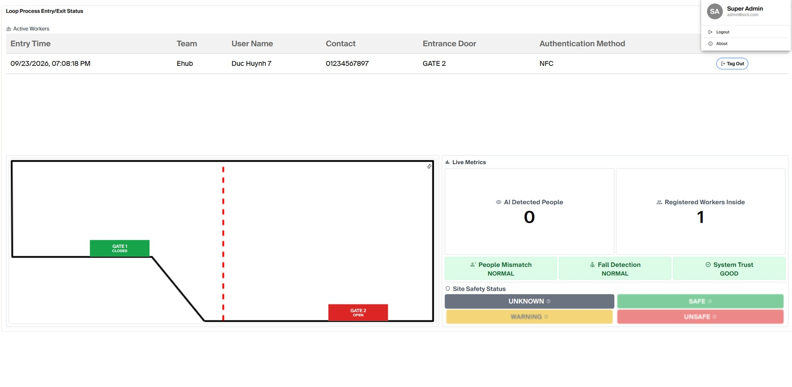
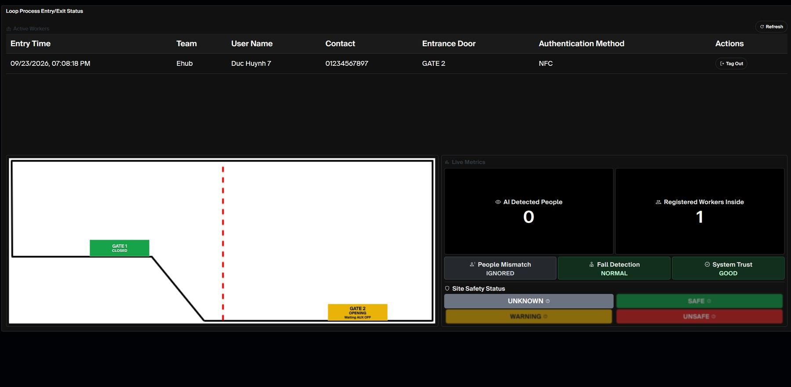
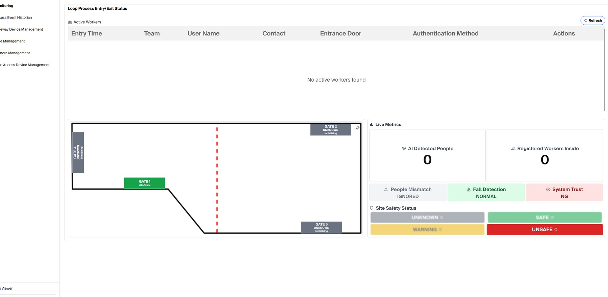
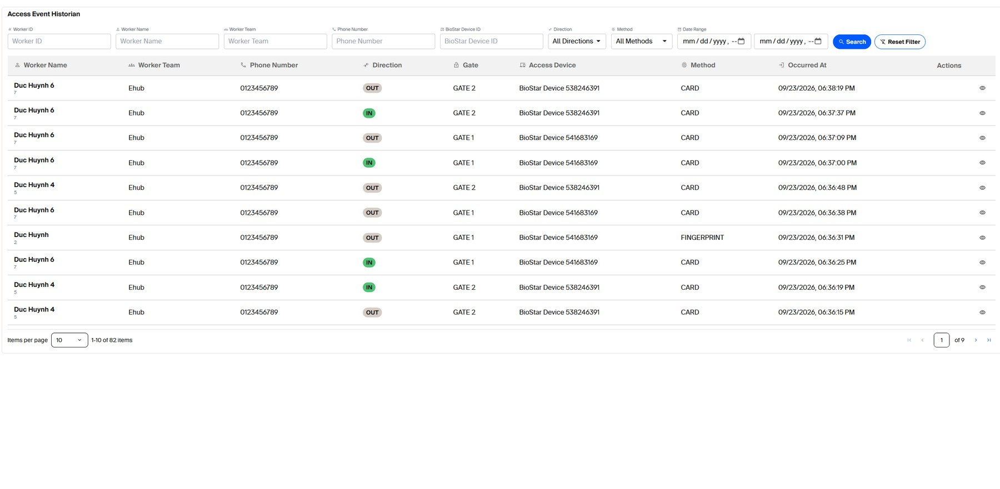
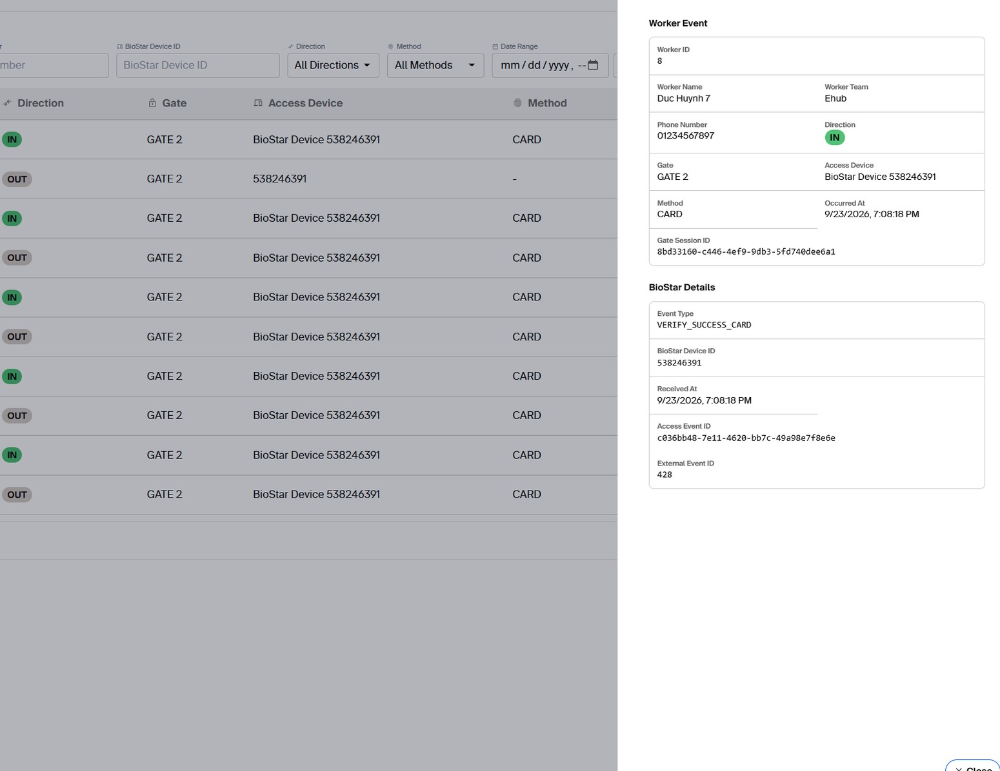

Monitoring Dashboard & Access History
Monitoring is the primary operational page. It intentionally shows high-level safety information rather than low-level diagnostic details.

1. Active Workers
The top table lists workers currently registered inside. It shows Entry Time, Team, User Name, Contact, Entrance Door and Authentication Method (Fingerprint, Face, NFC or Unknown).
- A successful first scan adds the worker to this table.
- An accepted OUT scan removes the worker from active presence.
- Tag Out is a manual correction action and should be used only by an account with the required permission.
2. Live shopfloor map
The left side shows the active floor-plan image configured in Shopfloor Layout. Each placed gate displays its current runtime state and may show a short secondary message:
| Gate display | Meaning |
|---|---|
| CLOSED | Gate close sequence is complete. |
| OPENING | Open sequence is in progress. |
| OPEN | Open sequence is complete. |
| CLOSING | Close sequence is in progress. |
| FAULT | Last commanded transition failed; inspect Gate Management and use Retry only after checking the cause. |
| UNKNOWN / Initializing | Current gate state is not yet established. |
| Waiting AUX OFF / ON | LOTO is waiting for physical FlexLock AUX feedback. |
| Gateway Offline | The gate's gateway is not currently reachable. |
The small rotation control on the map rotates the displayed site plan by 180° for operator viewing only; it does not change the saved gate positions.
3. Live Metrics
AI Detected People
Current Visionary people count. N/A means the camera count is unavailable—not zero.
Registered Workers Inside
Count of persisted active worker states created by accepted IN scans and cleared by OUT scans.
System Trust
GOOD means key monitoring sources are available enough for the displayed status to be trusted. NG indicates degraded/unavailable source data.
People Mismatch
MISMATCH when AI detects more people than registered workers while a gate is open. IGNORED when no gate is open, NORMAL when acceptable, N/A when camera count is unavailable.
Fall Detection
DETECTING while being confirmed, FALL DETECTED after persistence, NORMAL when clear, IGNORED when no gate is open, N/A if unavailable.
Site Safety Status
Overall Unknown / Safe / Warning / Unsafe summary.
4. Gate retry from Monitoring
When a gate is in FAULT, Monitoring can show a retry action. Retry repeats the failed open/close command using the same safe sequence. Before retrying, check the physical gate, FlexLock/AUX condition and Gateway connectivity. For repeated faults, use Gate Management and Log Viewer.
5. Light and dark modes
The application supports both themes. Operational meaning does not change; colors and backgrounds adapt for readability.

6. Viewer experience
Viewer accounts see the same operational data but management/create/edit/delete controls are removed. The default Viewer role can still issue manual gate Open/Close commands where provided by the UI/permission configuration.

7. Access Event Historian
The historian is read-only and is used to investigate who authenticated, where and how. Filters include Worker ID, Worker Name, Team, Phone Number, BioStar Device ID, Direction, Authentication Method and date/time range.

Event details
Open Details to see the worker event and BioStar information, including worker ID/name/team/phone, IN/OUT direction, Gate, Access Device, authentication method, occurrence time, gate session ID, BioStar event type, BioStar device ID, received time and external event ID.
